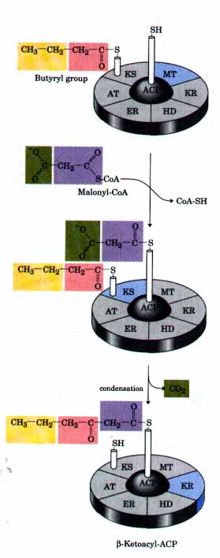
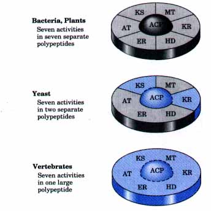
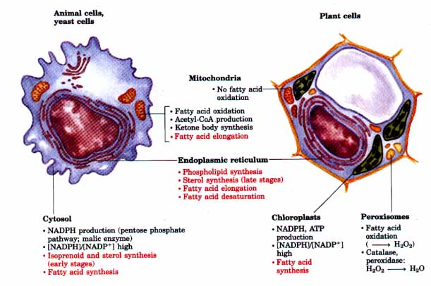
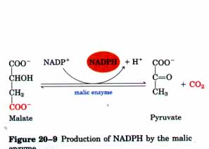
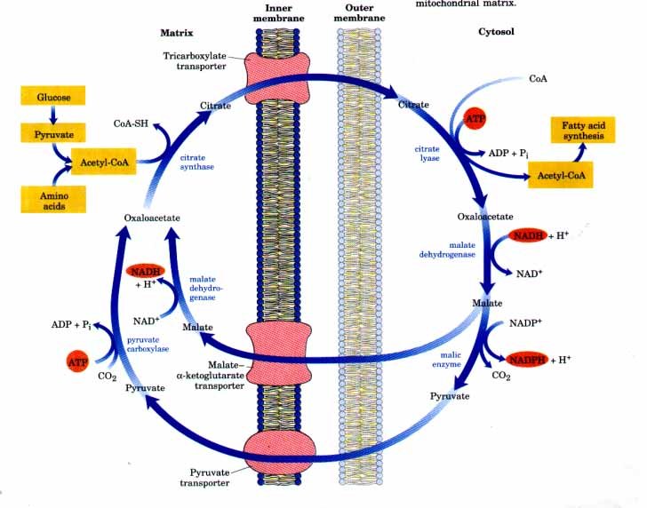
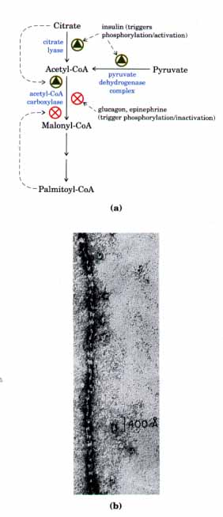
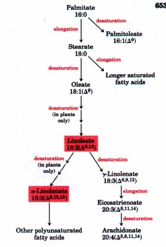

7 malonyl-CoA
+ 7ADP + 7Pi (20-1)
7 malonyl-CoA
+ 7ADP + 7Pi (20-1)The Fatty Acid Synthase Reactions Are Repeated to Form PalmitateThe production of the four-carbon, saturated fatty acyl-ACP completes one pass through the fatty acid synthase complex. The butyryl group is now transferred from the phosphopantetheine -SH group of ACP to the Cys -SH group of β-ketoacyl-ACP synthase, which initially bore the acetyl group (Fig. 20-5). To start the next cycle of four reactions that lengthens the chain by two more carbons, another malonyl group is linked to the now unoccupied phosphopantetheine -SH group of ACP (Fig. 20-6). Condensation occurs as the butyryl group, acting exactly as did the acetyl group in the first cycle, is linked to two carbons of the malonyl-ACP group with concurrent loss of CO2. The product of this condensation is a six-carbon acyl group, covalently bound to the phosphopantetheine -SH group. Its β-keto group is reduced in the next three steps of the synthase cycle to yield the six-carbon saturated acyl group, exactly as in the first round of reactions. Seven cycles of condensation and reduction produce the 16-carbon saturated palmitoyl group, still bound to ACP. For reasons not well understood, chain elongation generally stops at this point, and free palmitate is released from the ACP molecule by the action of a hydrolytic activity in the synthase complex. Small amounts of longer fatty acids such as stearate (18:0) are also formed. In certain plants (coconut and palm, for example) chain termination occurs earlier; up to 90% of the fatty acids in the oils of these plants are between 8 and 14 carbons long. |
 Figure 20-6 Beginning of the second round of the fatty acid synthesis cycle. The butyryl group is on the Cys -SH group. The incoming malonyl group is attached to the Pn -SH group. In the condensation step the entire butyryl group on the Cys -SH is exchanged for the carboxyl group of the malonyl residue, which is lost as CO2 (green). This step is analogous with that shown in Fig. 20-5. The product, a six-carbon β-ketoacyl group, now contains four carbons derived from malonyl-CoA and two derived from the acetyl-CoA that started the reaction. The β-ketoacyl group now undergoes steps 2 throu 4 as in Fig. 20-5. |
The overall reaction for the synthesis of palmitate from acetyl-CoA can be broken down into two parts. First, the formation of seven malonyl-CoA molecules:
7 Acetyl-CoA + 7CO2 + 7ATP 7 malonyl-CoA
+ 7ADP + 7Pi (20-1)
then seven cycles of condensation and reduction:
Acetyl-CoA + 7 malonyl-CoA + l4NADPH + 14H+
palmitate + 7C02 + 8CoA + l4NADP+ + 6H2O (20-2) The overall process (the sum of Eqns 20-1 and 20-2) is
8 Acetyl-CoA + 7ATP + l4NADPH + 14H+
palmitate + 8CoA + 6H2O + 7ADP + 7Pi + l4NADP+ (20-3)
The biosynthesis of fatty acids such as palmitate thus requires acetyl-CoA and the input of chemical energy in two forms: the group transfer potential of ATP and the reducing power of NADPH. The ATP is required to attach CO2 to acetyl-CoA to make malonyl-CoA; the NADPH is required to reduce the double bonds. We shall return to the sources of acetyl-CoA and NADPH soon, but let us first consider the structure of the remarkable enzyme complex that catalyzes the synthesis of fatty acids.
We noted earlier that the seven active sites for fatty acid synthesis (six enzymes and ACP) reside in seven separate polypeptides in the fatty acid synthase of E. coli; the same is true of the enzyme complex from higher plants (Fig. 20-7). In these complexes each enzyme is positioned with its active site near that of the preceding and succeeding enzymes of the sequence. The flexible pantetheine arm of ACP can reach all of the active sites, and it carries the growing fatty acyl chain from one site to the next; the intermediates are not released from the enzyxne complex until the finished product is obtained. As in the cases we have encountered in earlier chapters, this channeling of intermediates from one active site to the next increases the efficiency of the overall process.
| The fatty acid synthases of yeast and of vertebrates are also multienzyme complexes, but their integration is even more complete than in E. coli and plants. In yeast, the seven distinct active sites reside in only two large, multifunctional polypeptides, and in vertebrates, a single large polypeptide (Mr 240,000) contains all seven enzymatic activities as well as a hydrolytic activity that cleaves the fatty acid from the ACP-like part of the enzyme complex. The active form of this multifunctional protein is a dimer (Mr 480,000). |  Figure 20-7 The fatty acid synthase from bacteria and plants is a complex of seven different polypeptides. In yeast all seven activities reside in only two polypeptides, and in vertebrates, in a single large polypeptide. |

Figure 20-8 Subcellular localization of lipid metabolism in yeast and in vertebrate animal cells differs from that in higher plants. Fatty acid synthesis takes place in the compartment in which NADPH is available for reductive synthesis (i.e., where the [NADPH]/[NADP+] ratio is high). Processes in red are covered in this chapter.
In mammals, the fatty acid synthase complex is found exclusively in the cytosol (Fig. 20-8), as are the biosynthetic enzymes for nucleotides, amino acids, and glucose. This location segregates synthetic processes from degradative reactions, many of which take place in the mitochondrial matrix. There is a corresponding segregation of electron-carrying cofactors for anabolism (generally a reductive process) and those for catabolism (generally oxidative). Usually, NADPH is the electron carrier for anabolic reactions, and NAD+ serves in catabolic reactions. In hepatocytes, the ratio [NADPH]/[NADP+] is very high (about 75) in the cytosol, furnishing a strongly reducing environment for the reductive synthesis of fatty acids and other biomolecules. Because the cytosolic [NADH]/[NAD+] ratio is much smaller (only about 8 ×10-4), the NAD+-dependent oxidative catabolism of glucose can occur in the same compartment, at the same time, as fatty acid synthesis. The [NADH]/ [NAD+] ratio within the mitochondrion is much higher than in the cytosol because of the flow of electrons into NAD+ from the oxidation of fatty acids, amino acids, pyruvate, and acetyl-CoA. This high [NADH]/ [NAD+] ratio favors the reduction of oxygen via the respiratory chain.
In adipocytes cytosolic NADPH is largely generated by malic enzyme (Fig. 20-9). (We encountered an NAD-linked malic enzyme in the carbon fixation pathway of C4 plants (see Fig. 19-37); this enzyme is unrelated in function.) The pyruvate produced in this reaction reenters the mitochondrion. In hepatocytes and in the mammary gland of lactating animals, the NADPH required for fatty acid biosynthesis is supplied primarily by the reactions of the pentose phosphate pathway (Chapter 14). |
 Figure 20-9 Production of NADPH by the malic enzyme. |
In the photosynthetic cells of plants, fatty acid synthesis occurs not in the cytosol, but in the chloroplast stroma (Fig. 20-8). This location makes sense when we recall that NADPH is produced in chloroplasts by the light reactions of photosynthesis (Fig. 20-10). Again, the resulting high [NADPH I/[NADP+] ratio provides the reducing environment that favors reductive anabolic processes such as fatty acid synthesis.
light H2O + NADP+ > z0~ + NADPH + H~
Figure 20-10 Production of NADPH by photosynthesis.
In nonphotosynthetic eukaryotes, nearly all the acetyl-CoA used in fatty acid synthesis is formed in mitochondria from pyruvate oxidation and from the catabolism of the carbon skeletons of amino acids. AcetylCoA arising from the oxidation of fatty acids does not represent a significant source of acetyl-CoA for fatty acid biosynthesis in animals because the two pathways are regulated reciprocally, as described below. Because the mitochondrial inner membrane is impermeable to acetylCoA, an indirect shuttle transfers acetyl group equivalents across the inner membrane (Fig. 20-11). Intramitochondrial acetyl-CoA first reacts with oxaloacetate to form citrate, in the citric acid cycle reaction catalyzed by citrate synthase (see Fig. 15-7). Citrate then passes into the cytosol through the mitochondrial inner membrane on the tricarboxylate transporter. In the cytosol, citrate cleavage by citrate lyase regenerates acetyl-CoA; this reaction is driven by the investment of energy from ATP. Oxaloacetate cannot return to the matrix directly; there is no transporter for it. Instead, oxaloacetate is reduced by cytosolic malate dehydrogenase to malate, which returns to the mitochondrial matrix on the malate-a-ketoglutarate transporter in exchange for citrate, and is reoxidized to oxaloacetate to complete the shuttle. Alternatively, the malate produced in the cytosol is used to generate cytosolic NADPH through the activity of malic enzyme, as described above.
Plants have another means of acquiring acetyl-CoA for fatty acid synthesis. They produce acetyl-CoA from pyruvate using a stromal isozyme of pyruvate dehydrogenase (see Fig. 15-2).
Figure 20-11 The acetyl group shuttle for transfer of acetyl groups from mitochondria to the cytosol for fatty acid synthesis. (The outer mitochondrial membrane is freely permeable to all of these compounds.) Pyruvate derived from amino acid catabolism in the matrix, or from glucose by glycolysis in the cytosol, is converted to acetyl-CoA in the matrix. Acetyl groups pass out of the mitochondrion as citrate; in the cytosol they are delivered as acetylCoA for fatty acid synthesis. Malate returns to the mitochondrial matrix, where it is converted to oxaloacetate. An alternative fate for cytosolic malate is oxidation by malic enzyme to generate cytosolic NADPH; the pyruvate produced returns to the mitochondrial matrix.

Fatty Acid Biosynthesis Is Tightly RegulatedWhen a cell or organism has more than enough metabolic fuel available to meet its energetic needs, the excess is generally converted to fatty acids and stored as lipids such as triacylglycerols. The reaction catalyzed by acetyl-CoA carboxylase is the rate-limiting step in the biosynthesis of fatty acids, and this enzyme is an important site of regulation. In vertebrates, palmitoyl-CoA, the principal product of fatty acid synthesis, acts as a feedback inhibitor of the enzyme, and citrate is an allosteric activator (Fig. 20-12a). When there is an increase in the concentrations of mitochondrial acetyl-CoA and of ATP, citrate is transported out of the mitochondria and becomes both the precursor of cytosolic acetyl-CoA and an allosteric signal for the activation of acetyl-CoA carboxylase. Acetyl-CoA carboxylase is also regulated by covalent alteration. Phosphorylation triggered by the hormones glucagon and epinephrine inactivates it, thereby slowing fatty acid synthesis. In its active (dephosphorylated) form, acetyl-CoA carboxylase polymerizes into long filaments (Fig. 20-12b); phosphorylation is accompanied by dissociation into monomeric subunits and loss of activity. The acetyl-CoA carboxylase from plants and bacteria is not regulated by citrate or by a phosphorylation-dephosphorylation cycle. The plant enzyme is activated by an increase in stromal pH and Mg2+ concentration, both of which occur upon illumination of the plant (p. 630). Bacteria do not use triacylglycerols as energy stores. The primary role of fatty acid synthesis in E. coli is to provide precursors for membrane lipids, and the regulation of this process is complex, involving certain guanine nucleotides that coordinate cell growth with membrane formation. Other enzymes in the pathway of fatty acid synthesis are also regulated. The pyruvate dehydrogenase complex and citrate lyase, both of which supply acetyl-CoA, are activated by insulin (Fig. 20-12a) through a cascade of protein phosphorylation. Insulin and glucagon are released in response to blood glucose concentrations that are too high or too low, respectively. Their broad metabolic effects and molecular mechanisms will be discussed further in Chapter 22. If fatty acid synthesis and β oxidation were to occur simultaneously, the two processes would constitute a futile cycle, wasting energy. We noted earlier (p. 496) that β oxidation is blocked by malonylCoA, which inhibits carnitine acyltransferase I. Thus during fatty acid synthesis, the production of the first intermediate, malonyl-CoA, shuts down β oxidation at the level of a transport system in the mitochondrial inner membrane. This control mechanism illustrates another advantage to a cell of segregating synthetic and degradative pathways in different cellular compartments. Long-Chain Fatty Acids Are Synthesized from PalmitatePalmitate, the principal product of the fatty acid synthase system in animal cells, is the precursor of other long-chain fatty acids (Fig. 2013). It may be lengthened to form stearate (18:0) or even longer saturated fatty acids by further additions of acetyl groups, through the action of fatty acid elongation systems present in the smooth endoplasmic reticulum and the mitochondria. The more active elongation system of the endoplasmic reticulum extends the 16-carbon chain of palmitoyl-CoA by two carbons, forming stearoyl-CoA. Although different enzyme systems are involved, and coenzyme A rather than ACP is the acyl carrier directly involved in the reaction, the mechanism of elongation is otherwise identical with that employed in palmitate synthesis: donation of two carbons by malonyl-ACP, followed by reduction, dehydration, and reduction to the saturated 18-carbon product, stearoyl-CoA. |
 Figure 20-12 Regulation of fatty acid synthesis. (a) In the cells of vertebrates, both allosteric regulation and hormone-dependent covalent modification influence the flow of precursors into malonylCoA. In plants, acetyl-CoA carboxylase is activated by the changes in [Mg2+] and pH that accompany illumination (not shown here). (b) Filaments of acetyl-CoA carboxylase (the active, dephosphorylated form) as seen with the electron microscope.  Figure 20-13 Routes of synthesis of other fatty acids. Palmitate is the precursor of stearate and longer-chain saturated fatty acids, as well as the monounsaturated acids, palmitoleate and oleate. Mammals cannot convert oleate into linoleate or α-linolenate (shaded red), which are therefore required in the diet as essential fatty acids. Conversion of linoleate into other polyunsaturated fatty acids and eicosanoids is outlined. Unsaturated fatty acids are symbolized by indicating the number of carbons and the number and position of the double bonds, as in Table 9-1. |